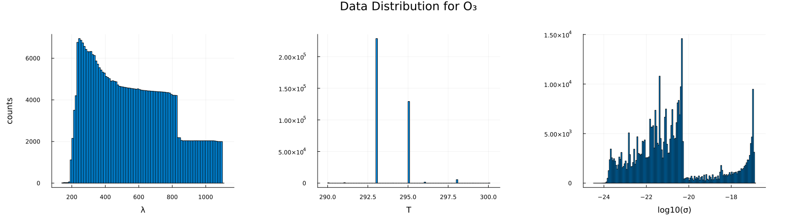
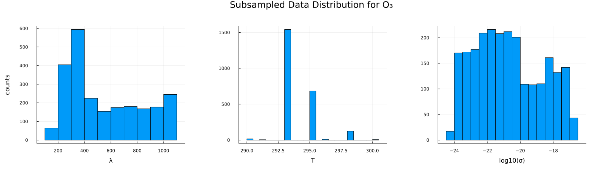
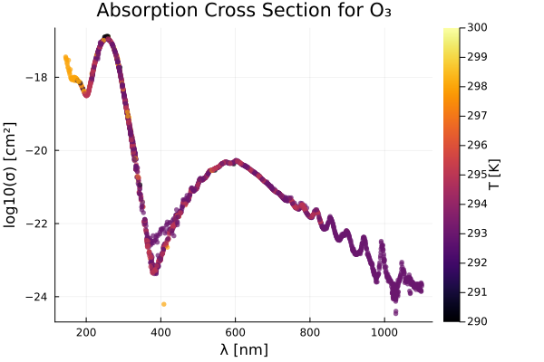

using Plots, MLPlotRecipes
using HDF5
using Tables, DataFrames, CSV
using MLJ, MLJGaussianProcesses
using StatsBase \(\mathrm{O_3}\)
include("./utils.jl")data_to_dfh5_path = "../../data/photolysis_data.h5"
species = "O3"
λs, σs, T1s, T2s, source_idx, T_units, category, formula, λ_units, σ_units = get_raw_data(h5_path, species)
min_data_λ = minimum(λs)
max_data_λ = maximum(λs)
println(min_data_λ)
println(max_data_λ)52.6
1100.0# load in spectrometer wavelengths
hr4000_df = CSV.File("../hr4000_wavelengths.txt") |> DataFrame ; println(nrow(hr4000_df))
println(maximum(hr4000_df.λ))
println(minimum(hr4000_df.λ))3648
1120.216
194.249Δλ = 50 # nm for padding
df = data_to_df(λs, σs, T1s, T2s, source_idx; λ_lb=minimum(hr4000_df.λ)-Δλ, λ_ub=maximum(hr4000_df.λ)+Δλ)
println(nrow(df))
describe(df)3662844×7 DataFrame
| Row | variable | mean | min | median | max | nmissing | eltype |
|---|---|---|---|---|---|---|---|
| Symbol | Float64 | Real | Float64 | Real | Int64 | DataType | |
| 1 | λ | 565.311 | 144.91 | 539.96 | 1100.0 | 0 | Float64 |
| 2 | σ | 9.07613e-19 | 3.4377e-25 | 8.0905e-22 | 1.41e-17 | 0 | Float64 |
| 3 | T | 293.791 | 290.0 | 293.0 | 300.0 | 0 | Float64 |
| 4 | source_id | 130.284 | 1 | 175.0 | 249 | 0 | Int64 |
nskip = 5
p2 = scatter(
df.λ[1:nskip:end],
log10.(df.σ[1:nskip:end]),
zcolor=df.T[1:nskip:end],
ms=3,
msw=0,
xlabel="λ [$(λ_units)]",
ylabel="log10(σ) [cm²]",
alpha=0.7,
rightmargin=10Plots.mm,
colorbar_title="T [$(T_units)]",
title="Absorption Cross Section for O₃",
label="",
)
savefig("O3_p2.png")
display(p2)
p1 = histogram(df.λ, xlabel="λ", ylabel="counts", label="", margin=10Plots.mm)
p2 = histogram(df.T, xlabel="T", label="", margin=10Plots.mm)
p3 = histogram(log10.(df.σ), xlabel="log10(σ)", label="", margin=10Plots.mm)
#p3 = histogram(df.σ, xlabel="σ", ylabel="counts")
phist = plot(p1, p2, p3, layout=(1,3), size=(1600, 450), plot_title="Data Distribution for O₃")
# load in spectrometer wavelengths
hr4000_df = CSV.File("../hr4000_wavelengths.txt") |> DataFrame ; println(nrow(hr4000_df))
println(maximum(hr4000_df.λ))
println(minimum(hr4000_df.λ))3648
1120.216
194.249It appears that GPR can not handle identical records with different target values, i.e. if \(x\_1 = [1.0, 2.0]\) and \(x\_2 = [1.0, 2.0]\), while \(y\_1 = 7.2\) and \(y_2 = 7.89\). To deal with this, let’s first group the dataframe by temperature, and average across identical wavelength values.
gdfs = groupby(df, :T)
res_dfs = []
for gdf ∈ gdfs
gdf_by_λ = groupby(gdf, :λ)
push!(res_dfs, combine(gdf_by_λ, [:σ, :T] .=> mean, renamecols = false))
end
df_unique = vcat(res_dfs...)191437×3 DataFrame
191412 rows omitted
| Row | λ | σ | T |
|---|---|---|---|
| Float64 | Float64 | Float64 | |
| 1 | 145.95 | 5.23e-18 | 298.0 |
| 2 | 148.1 | 4.47e-18 | 298.0 |
| 3 | 150.35 | 3.69e-18 | 298.0 |
| 4 | 152.65 | 2.93e-18 | 298.0 |
| 5 | 155.0 | 2.19e-18 | 298.0 |
| 6 | 157.45 | 1.63e-18 | 298.0 |
| 7 | 160.0 | 1.2e-18 | 298.0 |
| 8 | 162.6 | 9.77e-19 | 298.0 |
| 9 | 165.3 | 8.66e-19 | 298.0 |
| 10 | 168.1 | 8.14e-19 | 298.0 |
| 11 | 170.95 | 8.17e-19 | 298.0 |
| 12 | 173.15 | 8.57e-19 | 298.0 |
| 13 | 174.65 | 8.4e-19 | 298.0 |
| ⋮ | ⋮ | ⋮ | ⋮ |
| 191426 | 721.75 | 5.17e-22 | 290.0 |
| 191427 | 724.78 | 4.79e-22 | 290.0 |
| 191428 | 727.94 | 4.51e-22 | 290.0 |
| 191429 | 731.11 | 4.22e-22 | 290.0 |
| 191430 | 734.13 | 3.87e-22 | 290.0 |
| 191431 | 737.44 | 3.74e-22 | 290.0 |
| 191432 | 740.6 | 3.77e-22 | 290.0 |
| 191433 | 743.9 | 3.76e-22 | 290.0 |
| 191434 | 747.21 | 3.66e-22 | 290.0 |
| 191435 | 749.8 | 3.59e-22 | 290.0 |
| 191436 | 325.126 | 1.647e-20 | 294.09 |
| 191437 | 253.7 | 1.1365e-17 | 297.3 |
function representative_rand_sample(column::AbstractVector, nbins::Int, npoints::Int)
n_per_bin = floor(Int, npoints/nbins)
hist = fit(Histogram, column, nbins=nbins)
bin_edges = hist.edges[1]
idx_out = []
# loop over each bin
for i ∈ 1:size(bin_edges, 1)-1
bin_idxs = findall(ξ -> bin_edges[i] < ξ && ξ < bin_edges[i+1], column)
n_to_sample = minimum([n_per_bin, size(bin_idxs, 1)])
idx_res = sample(bin_idxs, n_to_sample, replace=false)
push!(idx_out, idx_res) # sample without replacement
end
return unique(vcat(idx_out...))
end
λ_idxs = representative_rand_sample(df_unique.λ, 1000, 1500)
σ_idxs = representative_rand_sample(log10.(df_unique.σ), 500, 2000)
# λ_idxs = representative_rand_sample(df_unique.λ, 1250, 1500)
# σ_idxs = representative_rand_sample(log10.(df_unique.σ), 750, 2000)
idxs_res = shuffle(unique(vcat(λ_idxs, σ_idxs)))
df_sampled = df_unique[idxs_res, :]2387×3 DataFrame
2362 rows omitted
| Row | λ | σ | T |
|---|---|---|---|
| Float64 | Float64 | Float64 | |
| 1 | 386.59 | 4.21367e-24 | 293.0 |
| 2 | 407.64 | 2.12243e-23 | 295.0 |
| 3 | 415.19 | 2.91879e-23 | 295.0 |
| 4 | 213.78 | 7.43547e-19 | 293.0 |
| 5 | 689.713 | 1.17499e-21 | 293.0 |
| 6 | 364.75 | 4.80842e-23 | 295.0 |
| 7 | 1028.98 | 1.80185e-24 | 293.0 |
| 8 | 894.59 | 5.17471e-23 | 293.0 |
| 9 | 260.6 | 1.24e-17 | 290.0 |
| 10 | 590.98 | 4.48892e-21 | 295.0 |
| 11 | 287.63 | 1.86089e-18 | 295.0 |
| 12 | 916.92 | 1.64895e-23 | 293.0 |
| 13 | 409.06 | 2.56583e-23 | 295.0 |
| ⋮ | ⋮ | ⋮ | ⋮ |
| 2376 | 274.17 | 6.07182e-18 | 293.0 |
| 2377 | 1039.85 | 2.66417e-24 | 293.0 |
| 2378 | 1088.5 | 1.6595e-24 | 293.0 |
| 2379 | 322.47 | 2.14004e-20 | 295.0 |
| 2380 | 596.49 | 4.80395e-21 | 293.0 |
| 2381 | 633.56 | 3.31589e-21 | 293.0 |
| 2382 | 254.29 | 1.28e-17 | 290.0 |
| 2383 | 701.03 | 8.4583e-22 | 295.0 |
| 2384 | 372.699 | 3.77e-23 | 293.0 |
| 2385 | 489.53 | 8.03712e-22 | 295.0 |
| 2386 | 741.605 | 5.05682e-22 | 293.0 |
| 2387 | 1081.37 | 1.82854e-24 | 293.0 |
p1 = histogram(df_sampled.λ, xlabel="λ", ylabel="counts", label="", margin=10Plots.mm)
p2 = histogram(df_sampled.T, xlabel="T", label="", margin=10Plots.mm)
p3 = histogram(log10.(df_sampled.σ), xlabel="log10(σ)", label="", margin=10Plots.mm)
#p3 = histogram(df.σ, xlabel="σ", ylabel="counts")
phist = plot(p1, p2, p3, layout=(1,3), size=(1600, 450), plot_title="Subsampled Data Distribution for O₃")
p = scatter(
df_sampled.λ,
log10.(df_sampled.σ),
zcolor=df_sampled.T,
ms=3,
msw=0,
xlabel="λ [$(λ_units)]",
ylabel="log10(σ) [cm²]",
alpha=0.7,
rightmargin=10Plots.mm,
colorbar_title="T [$(T_units)]",
title="Absorption Cross Section for O₃",
label="",
)
using KernelFunctions
using ParameterHandling
#kernel(θ) = θ.σ₁²*(SqExponentialKernel() ∘ ScaleTransform(1/(2(θ.ℓ₁)^2))) + θ.σ₂²*(Matern32Kernel() ∘ ScaleTransform(1/(2(θ.ℓ₂)^2)))
#θ_init = (;σ₁²=positive(0.1), ℓ₁=positive(0.1), σ₂²=positive(0.1), ℓ₂=positive(0.1),)
# gpr = GPR(
# k = kernel,
# θ_init = θ_init,
# σ²=1e-5
# )
# mach = machine(gpr, Xtrain, ytrain) |> fit!
println(nrow(df_sampled))
Xtrain = df_sampled[1:2000, [:λ, :T]]
Xtest = df_sampled[2001:end, [:λ, :T]]
ytrain = log10.(df_sampled.σ[1:2000])
ytest = log10.(df_sampled.σ[2001:end])
#gpr = GPR(σ²=0.00001)
gpr = GPR(σ²=20.0)
#gpr = GPR(σ²=10.0)
mach = machine(gpr, Xtrain, ytrain) |> fit!2387[ Info: Training machine(GPR(μ = 0.0, …), …).Iter Function value Gradient norm
0 1.893567e+04 1.091244e+04
* time: 0.01671600341796875
1 1.405405e+04 9.992352e+02
* time: 6.924190044403076
2 4.565267e+03 5.969289e+02
* time: 11.398995876312256
3 4.454063e+03 7.739619e+02
* time: 13.067230939865112
4 4.255704e+03 6.834836e+01
* time: 14.137372016906738
5 4.253254e+03 1.680068e+00
* time: 15.80565094947815
6 4.253250e+03 1.309147e+00
* time: 17.47168207168579
7 4.252584e+03 9.438136e-01
* time: 20.816890954971313
8 4.252583e+03 4.750737e-02
* time: 22.50261402130127
9 4.252583e+03 5.841785e-04
* time: 24.17035984992981
10 4.252583e+03 1.603219e-06
* time: 25.295099020004272
11 4.252583e+03 3.395776e-08
* time: 26.96492886543274
12 4.252583e+03 3.395776e-08
* time: 28.109287977218628
13 4.252583e+03 7.167757e-07
* time: 30.312039852142334
14 4.252583e+03 1.868200e-07
* time: 34.78383708000183
15 4.252583e+03 1.064816e-05
* time: 37.676944971084595
16 4.252583e+03 2.192087e-04
* time: 44.19379806518555
17 3.313514e+03 9.830546e+02
* time: 53.10497808456421
18 3.310122e+03 9.828801e+02
* time: 58.697805881500244
19 2.801403e+03 9.769818e+02
* time: 60.93287801742554
20 -2.844720e+02 1.384003e+03
* time: 66.63852190971375┌ Error: Problem fitting the machine machine(GPR(μ = 0.0, …), …).
└ @ MLJBase ~/.julia/packages/MLJBase/uxwHr/src/machines.jl:682
[ Info: Running type checks...
[ Info: Type checks okay. LoadError: PosDefException: matrix is not positive definite; Cholesky factorization failed.y_pred_train = predict_mean(mach, Xtrain);
y_pred_test = predict_mean(mach, Xtest);LoadError: UndefVarError: mach not definednow let’s collect some more points in order to evaluate our model using indices other than the ones used during training.
p = scatterresult(
ytrain, y_pred_train,
ytest, y_pred_test,
xlabel="log10(σ) Truth",
ylabel="log10(σ) Fit",
plot_title="O₃ GPR Fit"
)
savefig("O3_scatter.png")
savefig("O3_scatter.pdf")
display(p)LoadError: UndefVarError: y_pred_train not definedp = quantilequantile(
ytrain, y_pred_train,
ytest, y_pred_test,
xlabel="log10(σ) Truth",
ylabel="log10(σ) Fit",
title="O₃ GPR Fit"
)
savefig("O3_quantile.png")
savefig("O3_quantile.pdf")
display(p)LoadError: UndefVarError: y_pred_train not definedp1 = scatter(
Xtrain.λ,
y_pred_train,
zcolor=Xtrain.T,
ms=3,
msw=0,
xlabel="λ [$(λ_units)]",
ylabel="log10(σ) [cm²]",
alpha=0.7,
rightmargin=10Plots.mm,
colorbar_title="T [$(T_units)]",
label="Training Data",
)
scatter!(
Xtest.λ,
y_pred_test,
zcolor=Xtest.T,
ms=3,
msw=0,
# markershape=:rect,
markershape=:star5,
xlabel="λ [$(λ_units)]",
ylabel="log10(σ) [cm²]",
alpha=0.7,
rightmargin=10Plots.mm,
colorbar_title="T [$(T_units)]",
title="Predicted O₃ Cross Section",
label="Testing Data",
)
savefig("predicted_O3_data.png")
savefig("predicted_O3_data.pdf")
display(p1)LoadError: UndefVarError: y_pred_train not definedFinally, let’s try prediction at the desired wavelength bins:
function predict_logσ(T, λs, mach)
Xout = copy(λs)
Tout = T
Xout[!, :T] = [Tout for _ ∈ 1:nrow(λs)]
return predict_mean(mach, Xout)
end
p = plot()
Ts = 292.0:0.5:300.0
# cs = cgrad(:thermal, Ts, categorical = true)
cs = cgrad(:roma, size(Ts,1), categorical = true, rev=true)
i = 1
for T ∈ Ts
logσ = predict_logσ(T, hr4000_df, mach)
plot!(
hr4000_df.λ, logσ,
linewidth=2,
alpha=0.5,
color=cs[i],
label="$(T) K",
legend=:outertopright,
)
i+=1
end
xlabel!("λ [nm]")
ylabel!("log10(σ) [cm²]")
title!("Predicted Cross Section at Spectrometer λ's")
savefig("O3_σ_vs_T.png")
savefig("O3_σ_vs_T.pdf")
display(p)LoadError: UndefVarError: mach not defined